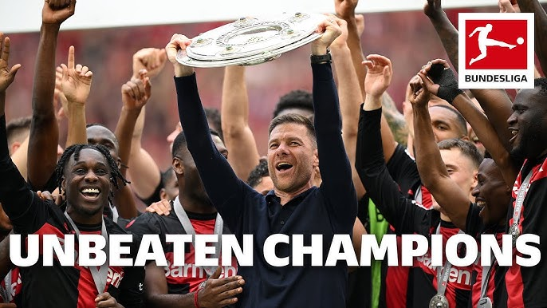
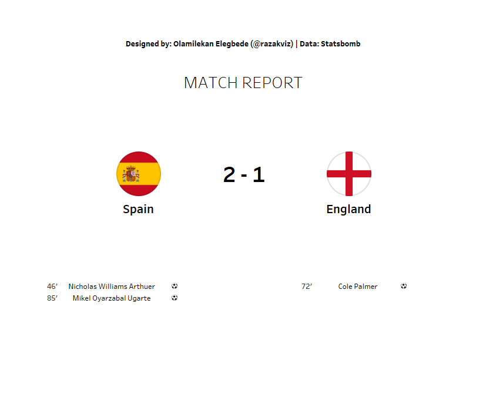
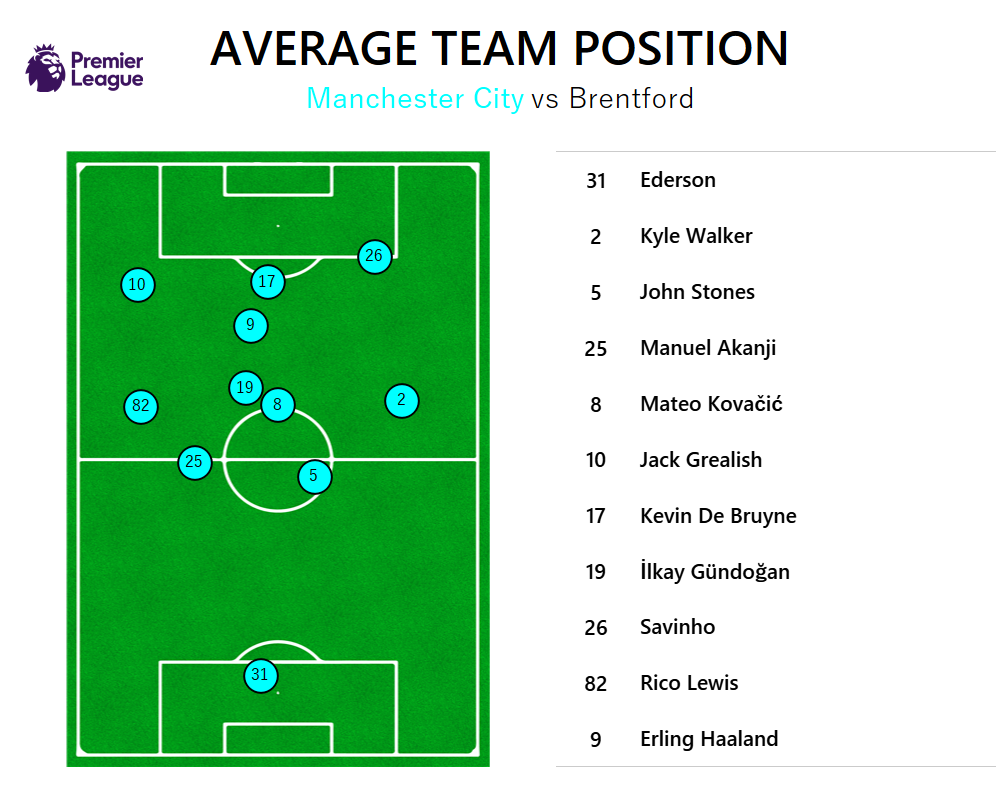
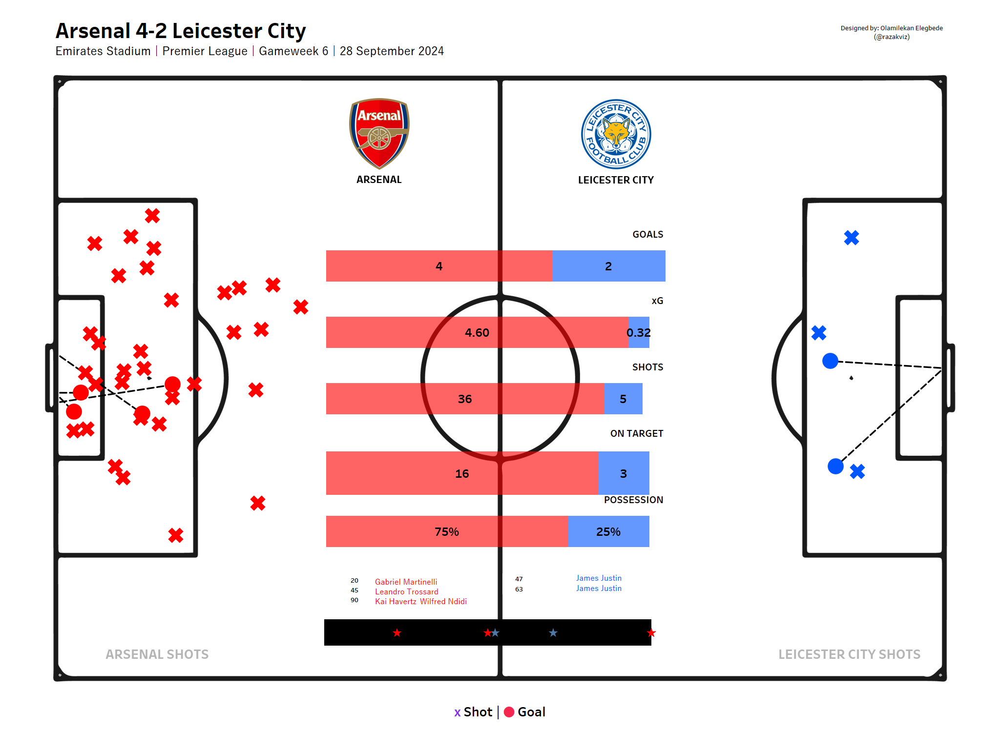
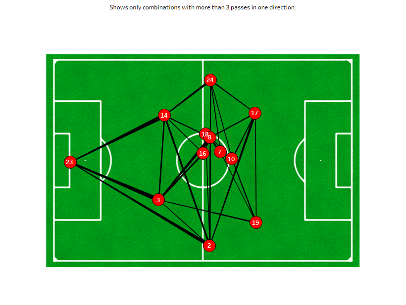
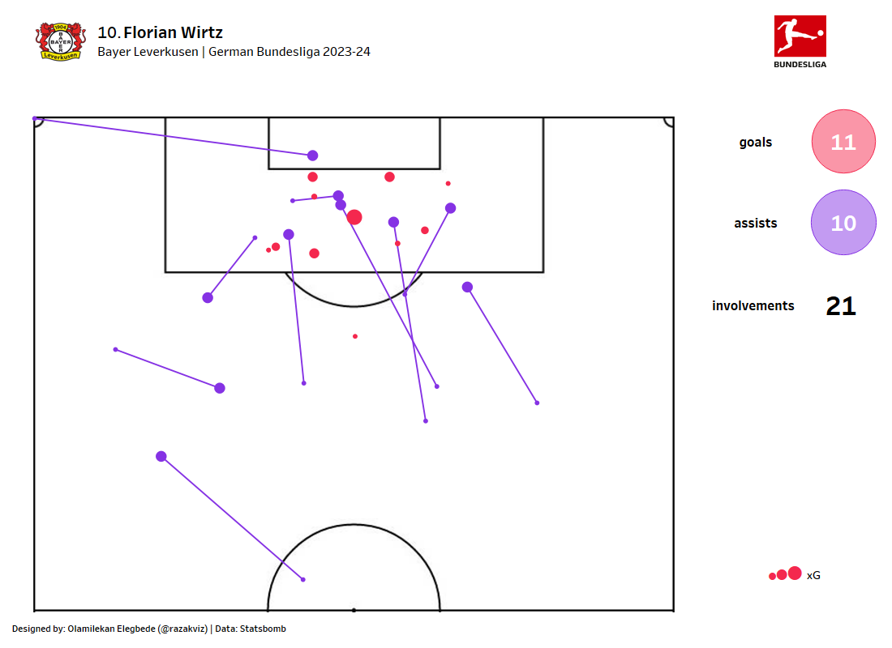
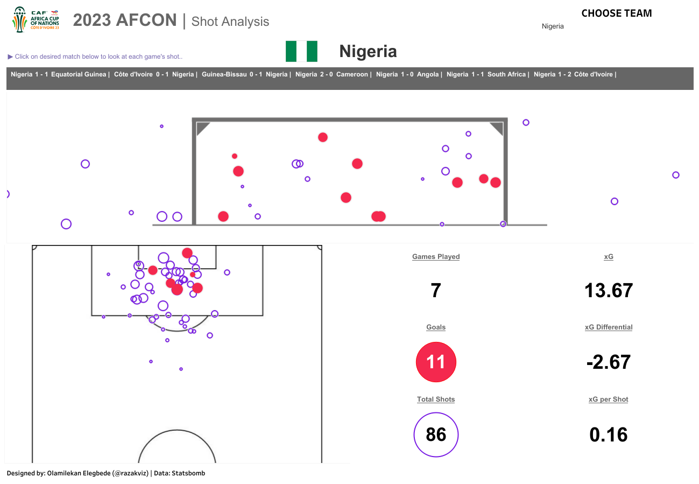
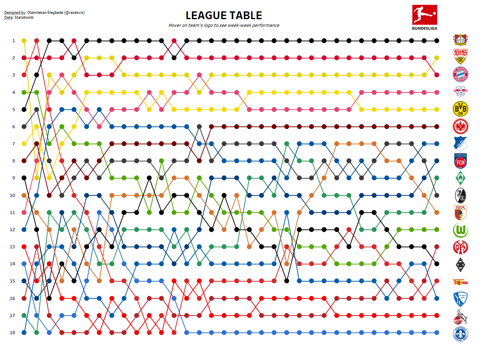

Analysis of Bayer Leverkusen 2023/24 Unbeaten Season
An analysis of over 130,000 event data on Bayer Leverkusen's invincible season using Statsbomb API in Python and Tableau.
After going an entire 34-game season unbeaten, I decided to obtain insights into how Bayer Leverkusen were able to achieve this. This process involved studying their formation, passing network, how well they shot the ball against each team using a goal map and many more.
Statsbomb API | Python| Tableau

Mens EUROs 2024 Finals Report
I developed a comprehensive post-match tactical report for the UEFA Euro 2024 Final between Spain and England.
This project involved multiple stages of data processing, analysis, and visualization to provide detailed insights into the match dynamics and player performances.
Statsbomb API | Python| Tableau

Average Team & Player Position
The average team or player position football visualization provides valuable insights to a team coaching staff on Team Shape and Structure
- Individual Player Roles and Involvement
- Defensive and Offensive Balance.

Combined Game Shotmap
A combined shotmap provides a visual and statistical summary of the total shots and those that were on target along with the goals scored by each team, offering insights into shooting accuracy and effectiveness.

Team Pass Network
A pass network is a visual representation of the passes made between players in a match, showing how they connect with each other on the pitch.

Player Pass Map
The pass map visualizes all the passes made by a player in a game.
It is used to evaluate the passing performance of a player, including distribution and accuracy, analyze and identify players areas of improvement, such as accuracy and pass selection.

Player Goal Involvement
This is a representation of a player's involvements in goals through a combination of goals and assists. It evaluates the player's impact on the team's offensive play by showing how and where they contribute to goals.
Identifies patterns in the player's goal involvements, such as preferred shooting locations or assist zones.

Team Shotmap
A visualization that accounts for shot outcomes, a goal, a shot off target and a shot saved by the goalkeeper. It also provides key information about the quality of the shots using the following metrics, Expected Goal (xG), xG Differential (Goal - xG) and xG per Shot.

Bumpy Chart - Week-to-Week League Table
A visualization that allows users to see how each team's ranking has flunctuated throughout the season.
Highlight dramatic changes in a team's position, such as a sudden drop or rise in form. This can indicate a manager change or a change in tactics.
Identify teams that have maintained a steady position at the top or bottom of the league table
and compare performance trends of different teams.